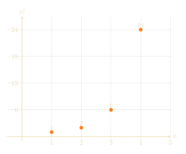

How many ways are there for Alice (A), Bob (B), and Charlie (C) to line up in a line? Any 3 of them could be first in line, but then only 2 of them remain to be second in line and only 1 remains to be third in line. So there are 6 possibilities total: ABC, ACB, BAC, BCA, CAB, and CBA.
If Alice had more friends -- let's say her friend group had \(n\) people in total -- there would be
\[ n\times(n-1)\times\cdots\times2\times1 \]ways for all of them to line up. We denote this product by \(n!\), the factorial of \(n.\) The factorial grows very rapidly; for example, in a group of 10 people, there would be
\[ 10!=10\times9\times8\times7\times6\times5\times4\times3\times2\times1 =3,628,800 \]ways to line up. That's over 3 million possibilities!
Observe that
\[ n! = n \cdot (n-1)!. \]This is an incredibly useful property of the factorial function.
The factorial of 3.5, take one
So far, we only know how to evaluate the function \(n!\) for integer values of \(n\). But wouldn't it be wonderful if we were able to fill in the graph, and tell you what \(3.5!\) means?
What should happen between the integer factorials?

We want some way of filling in the graph which retains the fundamental property of factorial, that \(x!=x\cdot(x-1)!\). Using this property, we can deduce
\[ 3.5!=3.5\times2.5\times1.5!, \]but it doesn't seem like we can figure out what \(1.5!\) should mean. Certainly we want it to be somewhere between \(1!=1\) and \(2!=2\), but which value specifically?
Drawing a curve through the known points is easy. The real problem is finding a meaningful continuation of factorial that still respects its fundamental identity.
For this, let us take a slight detour and think about binomial coefficients.
More complicated counting
Recall that factorials are used to help solve a counting problem: factorials count the number of ways of arranging \(n\) items in a line. We're now going to solve a slightly harder counting problem.
I have four neighbors: Sophie, Michael, Ines, and Xiaoyu. I want to choose two of them to ask for help moving into my new apartment. How many ways are there to do this? If you enumerate all the possible pairings, there are six different groups of two I can form from four people:
In general, we write \(\binom{n}{k}\) (pronounced "\(n\) choose \(k\)") to mean "the number of ways to choose \(k\) things from a group of \(n\) things." For example, \(\binom{4}{2} = 6,\) because above we saw that when you have four friends, there are exactly six different ways to choose two of them.
How would we compute \(\binom{6}{3}\)? Well, I have 6 friends, and I want to choose 3 of them. There are 6 ways to choose the first friend; 5 ways to choose the second; and 4 ways to choose the third. Thus it seems at first that we should multiply \(6 \times 5 \times 4\) to get our answer.
Unfortunately, this is slightly too big. For example, we computed \(\binom{4}{2} = 6\) above, but if we tried using this reasoning, then we'd get the value \(4 \times 3 = 12\) (four ways to pick our first friend, and three ways to pick the second). What's going wrong?
The problem is that "Ines and Sophie" and "Sophie and Ines" is the same pair of people, but when we did \(4 \times 3,\) we counted those as two different pairs. So, we need to divide \(12\) by \(2,\) to correct for the double counting: we then find
\[ \binom{4}{2} = \frac{4 \times 3}{2} = 6. \]Going back to \(\binom{6}{3},\) we now see that \(6 \times 5 \times 4\) will overcount the number of ways to select 3 friends from a group of 6; but how much will it overcount by?
Think about a possible triple of friends, like Alice (A), Bob (B), and Charlie (C) from the start of this post. We could arrange them as ABC, ACB, BAC, BCA, CAB, or CBA, as we saw in the beginning; this is \(3! = 6\) ways to arrange them. Thus, when doing \(6 \times 5 \times 4,\) we will count the "Alice, Bob, Charlie" trio a total of six times.
So, as each trio gets counted six times when it should only be counted once, to get the true value of \(\binom{6}{3}\) we need to divide by \(3!\), leaving us with
\[ \binom{6}{3} = \frac{6 \times 5 \times 4}{3!} = 20. \]In general, we have
\[ \binom{10}{4} = \frac{10 \times 9 \times 8 \times 7}{4!}, \] \[ \binom{7}{2} = \frac{7 \times 6}{2!}, \]and
\[ \binom{n}{k} = \frac{ n \times (n-1) \times \cdots \times (n-(k-1)) }{k!}. \]This last, and most general, formula, can be a bit hard to parse at first, so it might be helpful to ponder the special cases
\[ \binom{n}{2} = \frac{n \times (n-1)}{2!} \]and
\[ \binom{n}{3} = \frac{n \times (n-1) \times (n-2)}{3!}. \]Many sources write the formula for \(\binom{n}{k}\) in a funnier way, using even more factorials.
For example, a standard textbook would write
\[ \binom{n}{2} = \frac{n!}{2! \times (n-2)!}. \]Why is that the same as our formula? Well, observe that
\[ n! = n \times (n-1) \times (n-2)!, \]and so
\[ \binom{n}{2} = \frac{n!}{2! \times (n-2)!} = \frac{n \times (n-1) \times (n-2)!} {2! \times (n-2)!} = \frac{n \times (n-1)}{2!}, \]where in the last step we cancelled out the \((n-2)!\) term from the numerator and denominator, to get our original formula for \(\binom{n}{2}.\) Similarly, one can use this cancellation trick to show
\[ \binom{n}{3} = \frac{n!}{3! \times (n-3)!}, \]or even
\[ \binom{n}{k} = \frac{n!}{k! \times (n-k)!}. \]The formula \[ \binom{n}{k} = \frac{n!}{k! \times (n-k)!} \] is computationally inferior to \[ \binom{n}{k} = \frac{ n \times (n-1) \times \cdots \times (n-(k-1)) }{k!}, \] because in the first formula, you might accidentally do a lot of extra work when computing \(n!\) and \((n-k)!\) which will end up cancelling out anyways.
However, the "fully factorial-ied" formula does have one benefit: from it, we can see the symmetry
\[ \binom{n}{k} = \frac{n!}{k! \times (n-k)!} = \frac{n!}{(n-k)! \times k!} = \frac{n!}{(n-k)! \times (n-(n-k))!} = \binom{n}{n-k}. \]That is,
\[ \binom{n}{k} = \binom{n}{n-k}. \]Can you explain \(\binom{n}{k}=\binom{n}{n-k}\) directly, without using the factorial formula?
As a challenge, you can try thinking of a combinatorial explanation of this fact. But this will end our digression on binomial coefficients.
Enter Euler
Euler exploited the identity \[ \binom{n}{k} = \binom{n}{n-k} \] to define factorials for arbitrary numbers, allowing him to compute \(3.5!.\) Let's see how.
Observe first that the formula
\[ \binom{n}{k} = \frac{ n \times (n-1) \times \cdots \times (n-(k-1)) }{k!} \]still makes sense even when \(n\) is completely arbitrary. For example,
\[ \binom{3.5}{2} = \frac{3.5 \times 2.5}{2} = \frac{35}{8}, \]and
\[ \binom{\pi}{3} = \frac{\pi(\pi-1)(\pi-2)}{3!}. \]So, if we follow our noses and use the identities from above, we might expect that
\[ \binom{3.5}{2} = \binom{3.5}{1.5}. \]So, whatever \(\binom{3.5}{1.5}\) means, it ought to be equal to \(35/8.\) Unfortunately, it is rather problematic to evaluate something like \(\binom{x}{1.5}.\) Note that
\[ \binom{x}{2} = \frac{x \times (x-1)}{2!}, \]where we have two total terms in the product on top, and
\[ \binom{x}{3} = \frac{x \times (x-1) \times (x-2)}{3!}, \]where we have three total terms in the product on the top.
So, for \(\binom{x}{1.5},\) we'd somehow want to have a product of \(1.5\) terms on the top, but that doesn't seem to make sense. What do we do next?
Euler was a master of calculus. And, as we saw in Using calculus to do number theory , the core idea of calculus is approximation. So, Euler was really a master of approximation; he knew exactly what approximations he could get away with making when solving a problem, and he always knew how precise his approximations were.
Let's think about the formula
\[ \binom{n}{k} = \frac{ n \times (n-1) \times \cdots \times (n-(k-1)) }{k!} \]again. Can we get any good approximations for this?
When \(n\) is a lot bigger than \(k\), we can; for example, observe that
\[ \binom{1000}{3} = \frac{1000 \times 999 \times 998}{3!}, \]and
\[ 1000 \times 999 \times 998 \approx 1000 \times 1000 \times 1000 = 1000^3. \]Similarly, we can approximate
\[ \binom{n}{k} \approx \frac{n^k}{k!}, \]and the larger \(n\) is compared to \(k,\) the better this approximation will be.
The great thing about the approximation \(\binom{n}{k}\approx n^k/k!\) is that \(n^k\) still makes sense when \(k\) isn't a whole number.
For example, even though we don't know what \(\binom{3.5}{1.5}\) means, we can hope that
\[ \binom{3.5}{1.5} \approx \frac{(3.5)^{1.5}}{(1.5)!}. \]Using that \(\binom{3.5}{1.5} = \binom{3.5}{2} = 35/8,\) and rearranging, we can hope that
\[ (1.5)! \approx \frac{8}{35} \times 3.5^{1.5}. \]But remember: the approximation \[ \binom{n}{k}\approx\frac{n^k}{k!} \] is only good when \(n\) is a lot bigger than \(k.\) As \(3.5\) isn't that much bigger than \(1.5,\) this approximation to \((1.5)!\) likely isn't great (in fact, it's wrong at the very first digit after the decimal point; you can check this yourself at the end of the article, once you learn the true value of \((1.5)!\)).
Euler, master of approximation, knew this approximation was pretty bad. But he also knew how to make it better: use the expression
\[ \frac{(n+1.5)^{1.5}}{\binom{n+1.5}{n}}, \]where \(n\) is very large. Remember that, because \(\binom{n+1.5}{n}\) has the whole number \(n\) on the bottom, we know how to compute it; and using our identities, we have
\[ \frac{(n+1.5)^{1.5}}{\binom{n+1.5}{n}} = \frac{(n+1.5)^{1.5}}{\binom{n+1.5}{1.5}} \approx \frac{(n+1.5)^{1.5}} {\frac{(n+1.5)^{1.5}}{(1.5)!}} = (1.5)!. \]So, Euler defined \(x!\) to be the limit of
\[ \frac{(n+x)^x}{\binom{n+x}{n}} \]as \(n\) grows infinitely large.
In other words, Euler imagined defining \(x!\) for an arbitrary value of \(x\) to be the limit
\[ \lim_{n\to\infty} \frac{(n+x)^x}{\binom{n+x}{n}}. \]Observe that replacing the numerator \((n+x)^x\) of the formula with \(n^x\) doesn't change anything: for large \(n,\) the numbers \(n^x\) and \((n+x)^x\) are basically the same. This gives the final form of Euler's formula for the factorial:
The formula works not only for all real numbers \(x\), but for any complex number as well! So we now know what \(3.5!\) is, but also \((-0.7)!\) and \((2-0.3i)!\). Unfortunately, it's still pretty tricky to compute this limit! So, how do we?
Euler's reflection formula
Euler observed a very nice relationship between \(x!\) and \((-x)!\).
Observe that in the numerator of
\[ x!\cdot(-x)! = \lim_{n\to\infty} \frac{n^x\cdot n!} {(n+x)(n-1+x)\cdots(1+x)} \cdot \frac{n^{-x}\cdot n!} {(n-x)(n-1-x)\cdots(1-x)}, \]the terms \(n^x\) and \(n^{-x}\) cancel, becoming \(n^0=1.\) We can also simplify the denominator a bit: because \((a-b)(a+b)=a^2-b^2,\) we have
\[ (n+x)(n-x)=n^2-x^2, \] \[ (n-1+x)(n-1-x)=(n-1)^2-x^2, \]etc., so that
\[ x!\cdot(-x)! = \lim_{n\to\infty} \frac{(n!)^2} {(n^2-x^2)((n-1)^2-x^2)\cdots(1^2-x^2)}. \]The product can be re-grouped as \(\frac{1^2}{1^2-x^2}\cdots\frac{n^2}{n^2-x^2}\), so the limit equals the infinite product
\[ x!\cdot(-x)! = \frac{1}{1-\frac{x^2}{1^2}} \cdot \frac{1}{1-\frac{x^2}{2^2}} \cdot \frac{1}{1-\frac{x^2}{3^2}} \cdots. \]On the other hand, in The Riemann hypothesis (or, how to earn $1 million) we explained that Euler had, previously to his investigations of the factorial, discovered the remarkable identity
\[ \sin(x) = x \bigg(1-\frac{x^2}{\pi^2}\bigg) \bigg(1-\frac{x^2}{2^2\pi^2}\bigg) \bigg(1-\frac{x^2}{3^2\pi^2}\bigg) \cdots. \]As a reminder, the basic reason for this product is that \(\sin(x)\) has zeroes at \(0,\pm\pi,\pm2\pi,\cdots\).
Substituting this formula for \(\sin\) into our formula for \(x!\cdot(-x)!,\) we see
A function that began as a way of counting arrangements has somehow acquired both \(\pi\) and the sine function.
The factorial of 3.5, take two
Let's now use Euler's reflection formula to compute \(3.5!\). By substituting \(x!=x\cdot(x-1)!\) we can re-write the formula as
\[ (x-1)!\cdot(-x)! = \frac{\pi}{\sin(\pi x)}. \]At \(x=0.5\) we conclude
\[ (-0.5)!\cdot(-0.5)! = \frac{\pi}{\sin(0.5\pi)} = \pi, \]so
\[ (-0.5)!=\sqrt{\pi}. \]Somehow \(\pi\) appears in the formula for the factorial! Now
This is indeed between \(3!=6\) and \(4!=24\).
Volumes of balls in high dimensions
You may ask: it's cool you can extend the factorial, but why is it useful? One of the many places it appears is in the volume of balls in arbitrary dimensions.
We all know and love that, in 2-dimensions, a circle of radius \(r\) has area \(\pi r^2\). Going to 3-dimensions, the volume of a ball has a similar-looking formula, \(\frac43\pi r^3\). But what happens in dimensions 4 and higher? What is the 'size' of a radius \(r\) high-dimensional ball?
It turns out that, in dimension \(n,\) the volume of a ball of radius \(r\) is
When \(n=2\), the case of a circle, we recover
\[ \frac{\pi^1}{1!}r^2=\pi r^2. \]When \(n=3\), we recover
\[ \frac{\pi^{3/2}}{(3/2)!}r^3 = \frac{\pi^{3/2}} {\frac32\cdot\frac12\cdot\sqrt\pi}r^3 = \frac43\pi r^3. \]In higher dimensions, the volumes become:
\[ \frac12\pi^2r^4, \frac8{15}\pi^2r^5, \frac16\pi^3r^6, \frac{16}{105}\pi^3r^7, \cdots. \]Notice that the last volume comes from our computation of \(3.5!\) above.
A funny consequence of our formula is that balls occupy less and less space as the dimension increases. A ball of radius \(r\) always sits in a box of width \(2r\) which has volume \((2r)^n\). That means the proportion of the box occupied by the ball is
\[ \frac{\pi^{n/2}}{2^n(\frac n2)!}. \]Since the factorial function rapidly increases, this rapidly decreases. For example in dimension 8 the ball only occupies 1.5% of the box, and in dimension 24 the sphere only occupies 0.00000001% of the box.
It is remarkable that nevertheless the optimal sphere packing in these dimensions occupy 25.3% and 0.19% of space, respectively. Although those numbers seem small, look at how much they improve upon the naive packing!
One last piece of terminology
As one final remark, we will say that usually sources treating the factorial instead describe the "Gamma function,"
\[ \Gamma(x) := (x-1)!. \]It's annoying that the \(\Gamma\) function is shifted from the factorial function, so we avoided using the term \(\Gamma\) in this article to prevent confusion, but if you want to find a textbook account of this mathematics, you should search for "\(\Gamma\) function."